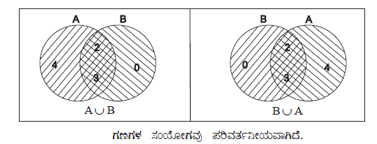
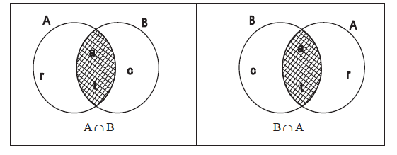

| Home | |
| SEARCH |
1) ಗಣಗಳ ಸಂಯೋಗ ಮತ್ತು ಛೇದನಗಳ ಗುಣ ಲಕ್ಷಣಗಳು 1. ಪರಿವರ್ತನ ನಿಯಮ ಉದಾ 1 :A = { x : x ∈ N ಮತ್ತು 1 < x < 5} ಮತ್ತು B = {0, 2, 3} ಪರಿಹಾರ :a) A = {x : x ∈ N ಮತ್ತು 1 < x < 5} A = {2, 3, 4} ಮತ್ತು B = {0, 2, 3} A∪B = {2, 3, 4} ∪ {0, 2, 3) ∴ A∪B = {0, 2, 3, 4} ................ (i) B∪A = {0, 2, 3} ∪ {2, 3, 4} ∴ B∪A = {0, 2, 3, 4} ............. (ii) (i) ಮತ್ತು (ii) ರಿಂದ A∪B = B∪ A ಉದಾ 2 :A = {r, a, t} ಮತ್ತು B = {c, a, t} A∩B = B∩A ಆಗಿದೆಯೇ? ತಾಳೆನೋಡಿ. ಪರಿಹಾರ :A∩ B = {r, a, t}∩{c, a, t} ∴ A∩ B = {a, t} ............. (i) B∩ A = {c, a, t}∩{r, a, t} ∴ B∩ A = {a, t} ............... (ii) i) ಮತ್ತು (ii) ರಿಂದ A∩B = B∩ A  |